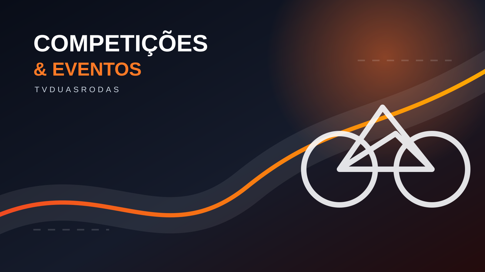

Competições & EventosA corrida termina.
A corrida termina.
A informação continua.
Encontre campeonatos, etapas, resultados, classificações e os principais eventos do universo das duas rodas.

Resultados e liderança
Oito destaques nacionais e mundiais para o público brasileiro.
Carregando competições...
Calendário oficial
Próximas etapas no Brasil
Agenda consolidada a partir da CBM e dos organizadores. Dados sujeitos a atualização oficial.
Carregando agenda...
Fonte principal: Calendário oficial da Confederação Brasileira de Motociclismo ↗
Eventos para colocar no calendário
Festivais, salões e encontros do Brasil e do mundo, selecionados para quem vive sobre duas rodas.
Carregando eventos...